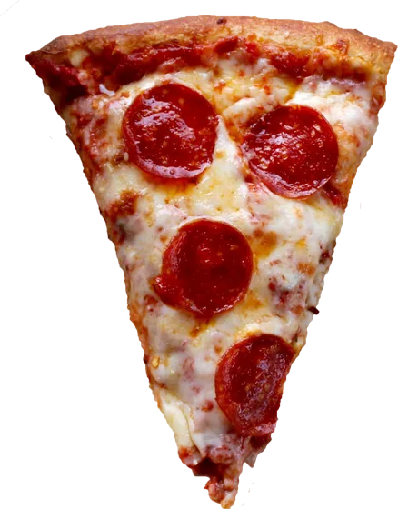
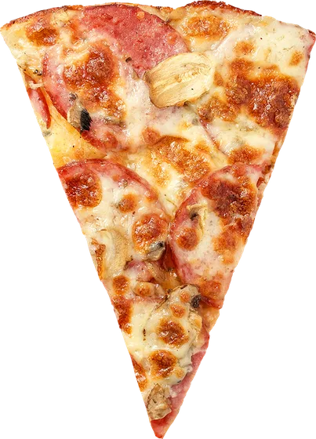
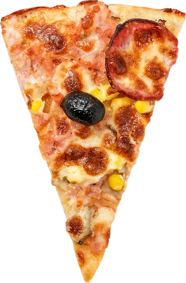
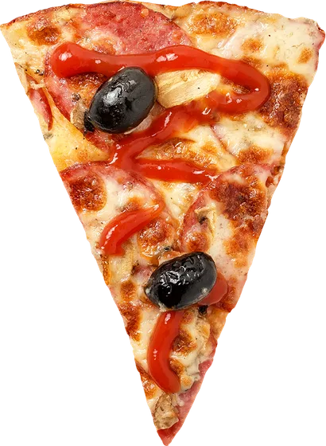
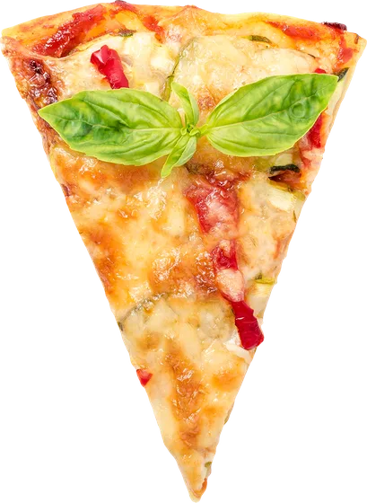

one rAF in · four variables out
A scroll-animation engine with no framework in the hot path: one listener, one requestAnimationFrame, reads and writes in separate phases. JS computes numbers; CSS does the rest. This entire page runs on it — the panel in the corner shows the live variables of the section in focus.
case 1 · entrance
The binary trigger: the section crosses the activation band, gains the sv-live class, and its children transition with incremental delays via --sv-order. Pure CSS transitions — React renders nothing during scroll.
Every tracked element shares the same loop. 1 or 100 sections: one listener.
All getBoundingClientRect calls first, all CSS vars after. Zero layout thrashing.
Driver and presets honor prefers-reduced-motion: content visible, no movement.
// React — automatic stagger: no classes on children
import { Reveal } from 'scrollvars/react'
<Reveal as="section" auto>
<h2>Title</h2>
<p>Copy</p>
<div>CTA</div> {/* sv-skip opts a child out */}
</Reveal>case 2 · continuous distance
--sv-view goes from −1 (entering) to 0 (on stage) to +1 (leaving). The three cards below read the same variable with different distances — and have no transition: continuous value + transition is what causes that rubber-band lag. Scroll up and down here.
/* ready-made preset */
<div className="sv-drift" style={{ '--sv-distance': '13rem' }}>…</div>
/* or custom CSS — the public API is the variables */
.my-parallax {
translate: 0 calc(var(--sv-view) * -120px);
opacity: calc(1 - max(var(--sv-view), -1 * var(--sv-view)));
}case 2b · parallax gallery
The classic parallax of award-site galleries: columns riding the scroll at different speeds — the middle one against the flow. Depth without 3D: different speed = perceived distance. One line of CSS per column, reading the section's continuous --sv-t.
/* markup: a normal section; register feeds the lerp target:
track(section, { onTravel: (t) => { target = t } }) */
/* different speed = perceived depth */
.column { translate: 0 calc((0.5 - var(--sv-t)) * var(--speed)); }
.column:nth-child(1) { --speed: 24vh; }
.column:nth-child(2) { --speed: -34vh; } /* against the flow */
// inertia: exponential smoothing — silky in motion, and the stop
// decelerates asymptotically (natural ease-out). One lerp per column:
current += (target - current) * factor // 0.07…0.16 per frame
col.style.setProperty('--tl', current)case 3 · pinned scenes
The pinned-storytelling technique: the section is N screens tall, the content sticks, and scroll becomes an index. The number swaps via callback (React state, integer changes only); the progress bar reads --sv-scene straight from CSS — zero re-renders while scrubbing.
/* THE PINNED SKELETON — every pinned case on this page reuses it:
<div class="outer"> height: 300vh (the scroll length)
<div class="sticky">…</div> position: sticky; top: 0; height: 100vh; overflow: hidden
</div>
track(outer, { pin: true }) or { scenes: N } — writes --sv-pin / --sv-scene */
// React — scene as state, fraction as a CSS var
<Scenes count={4}>
{({ scene, goTo }) => (
<div>
Slide {scene + 1}
{/* continuous bar, no re-renders: */}
<i style={{ width: 'calc(var(--sv-scene) / 3 * 100%)' }} />
</div>
)}
</Scenes>case 3b · curtain
The panels read --sv-pin (0→1 across the pinned stretch) and slide in opposite directions. The revealed text's letter-spacing reads the same variable. No JS beyond the driver — just CSS calc.
one calc() per panel: opposite translates, same variable
/* markup: the pinned skeleton (see case 3) at 250vh;
the two panels fill the sticky stage side by side */
/* curtain: two panels, opposite directions */
.panel-left { translate: calc(var(--sv-pin) * -101%) 0; }
.panel-right { translate: calc(var(--sv-pin) * 101%) 0; }
// track with pin: true (React: <Track pin>)
track(el, { pin: true })case 3c · horizontal carousel
The award-site classic: the track travels on the X axis while you scroll on Y. One line of CSS — 100vw − 100% is exactly how much the track overflows the screen.
The whole page shares a single passive scroll listener.
Every section updates in the same frame — reads first, writes after.
--sv-view, --sv-t, --sv-pin, --sv-scene. Any CSS that reads them is a preset.
No GSAP, no framework in the hot path. Driver: 1.2 KB gzip.
Curtain, carousel, 3D, scrubbed video — it is all the same handful of numbers.
/* markup: pinned skeleton at 300vh; inside the sticky stage:
<div class="track"> …cards… </div> + track(outer, { pin: true }) */
/* the track overflows the screen; the pin pays the difference */
.track {
width: max-content;
translate: calc((1 - var(--sv-pin)) * 100vw
+ var(--sv-pin) * min(100vw - 100%, 0px)) 0;
/* enters from offscreen right; min() keeps it moving on wide windows */
}case 3d · card deck
Four stacked cards; each clips its own slice of --sv-pin with a clamp and flies away on its turn. All the sequencing is CSS — no state, no callbacks.
Every getBoundingClientRect of the frame happens together, before any write.
view, t, pin and scene come from the same four sums per element.
The driver writes numbers. Your CSS decides what they mean.
No re-renders, no thrashing — the whole frame fits in a fraction of the budget.
/* markup: pinned skeleton at 400vh; sv-deck is the sticky stage's child
track(outer, { pin: true }) */
/* official preset since v0.7 — children stack via grid, auto-indexed */
<div class="sv-deck" style="--sv-count: 4"> …4 cards… </div>
/* under the hood: each card clips its own slice of the pin */
--sv-slice: clamp(0, calc(var(--sv-pin) * var(--sv-count) - var(--sv-order)), 1);
translate: 0 calc(var(--sv-slice) * -130vh);
rotate: calc(var(--sv-slice) * -7deg);case 3e · guided reading
The manifesto effect of award sites: every word becomes a span with an index, and opacity compares that index against --sv-pin. JS splits the text once — the rest is one clamp per word.
Scroll animation is not about moving pixels. It is about pacing the reading: every section arrives on cue, every number tells its story, and the whole page breathes at the pace of the finger that scrolls it.
/* markup: pinned skeleton at 300vh; split the text into <span>s with
--sv-order 0..n and set --sv-count on the container
track(outer, { pin: true }) */
/* official preset since v0.7: sv-reading + --sv-count on the container,
--sv-order per word span. One rule for every word: */
.sv-reading > * {
opacity: clamp(0.13, calc(var(--sv-pin) * (var(--sv-count) + 3) - var(--sv-order)), 1);
}case 3f · counter
@property types the variable as an integer and counter() prints it. The driver only writes the pin — the counting number is 100% CSS.
/* markup: pinned skeleton at 220vh
track(outer, { pin: true }) */
/* official preset since v0.7 */
<div class="sv-counter" style="--sv-max: 421"></div>
/* under the hood — a typed custom property makes the value countable */
@property --sv-int { syntax: '<integer>'; initial-value: 0; inherits: true; }
.sv-counter {
--sv-int: calc(var(--sv-pin) * var(--sv-max));
counter-reset: sv-counter var(--sv-int);
}
.sv-counter::after { content: counter(sv-counter); }case 3g · scrubbed video
The technique behind cinematic "3D" (Apple product pages): the scene is pre-rendered and the scroll picks the frame — forward and backward. This is a frame sequence on canvas, not a <video>: video decoders keep state and Safari's wedges under fast bidirectional seeking. Images are stateless — there is nothing to get stuck.
/* markup: pinned skeleton at 300vh with a <canvas> in the sticky stage;
frames extracted once: ffmpeg -i clip.mp4 -vf 'fps=6,scale=640:-2' f%02d.jpg */
// the callback gets the raw pin; the frame index is one line
track(section, { pin: true, onPin: (p) => {
ctx.drawImage(frames[Math.round(p * (frames.length - 1))], 0, 0)
}})
// video.currentTime works too (Chromium) — but decoders keep state;
// for bulletproof cross-browser scrubbing, ship frames (like Apple does)case 4b · kinetic typography
The layered-choreography idiom: the continuous scene becomes "frame slices" (--f1…--f4) and each act choreographs one thing. Letters are born scattered, the word assembles, a continuous wave rolls through it (notice: it follows your finger, no transition) and color sweeps letter by letter. Two triggers living on the same element — snapped states with transition, continuous without.
/* frame slices: each act clips 1 unit of the scene */
--f2: clamp(0, calc(var(--sv-scene) - 1), 1);
/* discrete act (snap + transition): the word assembles */
.letter { translate: calc(var(--sx) * (1 - var(--f2))) …; }
/* continuous act (no transition): the wave follows the finger */
.letter i { translate: 0 calc(sin(var(--i) * 55deg + var(--f3) * 540deg) * -0.22em); }
/* act 4: color sweeps, one letter at a time */
--lit: clamp(0, calc(var(--f4) * 12 - var(--i)), 1);
color: color-mix(in oklab, var(--accent) calc(var(--lit) * 100%), var(--text));case 4c · choreographed collage
The editorial pattern of award sites: elements enter from different corners, each with its own vector, curve and timing — one bounces (overshoot curve), one slides, one spins. No once latch here: leave the section and they fly back out; return and the choreography replays — the scroll conducts it in both directions.
/* markup: a normal section tracked with { once: true } —
sv-live latches and every item plays its own entrance */
/* each item declares its own entrance */
<div class="collage-item" style="--ex:-60vw; --er:-180deg;
--curve:cubic-bezier(0.34,1.56,0.64,1)"> /* bounces */
.collage-item { translate: var(--ex) var(--ey); rotate: var(--er); opacity: 0; }
.sv-live .collage-item { translate: 0 0; rotate: 0deg; opacity: 1; }case 4d · svg path
Two tricks on the same curve: pathLength="1" + stroke-dashoffset draw the stroke, and the dot travels the SAME path in the SVG's own units. The scroll does the driving — including in reverse.
/* markup: pinned skeleton; the SVG (path + circle) fills the sticky
stage; pathLength=1 on the path makes the dash math unitless */
/* the stroke draws itself */
path { stroke-dasharray: 1; stroke-dashoffset: calc(1 - var(--sv-pin)); }
// and the dot rides the SAME path, in SVG units
onPin: (p) => {
const pt = path.getPointAtLength(p * path.getTotalLength())
car.setAttribute('cx', pt.x); car.setAttribute('cy', pt.y)
}
/* offset-path works for HTML elements — but uses document px;
inside a scaled SVG, getPointAtLength is the exact alignment */case 5 · 3D product tour
The award product-page pattern: the object turns to the right angle for each scene and a card presents that part. The camera interpolates between orientation targets — three.js with no loop of its own (one frame per scroll) — and the cards crossfade in pure CSS, reading --sv-scene.
Each scene defines a rotation and zoom target; the camera eases between them.
The card you are reading crossfades in pure CSS — opacity derived from the distance to its scene.
A real model (embedded GLTF). Swap the duck for a client product: same code, different .glb.
Zero requestAnimationFrame of its own: one frame per scroll event. The GPU sleeps the rest.
// one orientation target per scene; the pin interpolates between them
const TARGETS = [
{ ry: -0.55, zoom: 1.12 }, // the beak
{ ry: 1.82, zoom: 0.92 }, // the wing
{ ry: 3.59, zoom: 0.98 }, // the tail
{ ry: 5.73, rx: 0.5 }, // high view
]
/* and the cards swap on their own, no JS: */
.card { opacity: clamp(0, calc(1 - abs(var(--sv-scene) - var(--i)) * 1.5), 1); }case 4 · 3D on scroll
The card below is pure CSS 3D: one rotateY reading --sv-t. No WebGL, no library — and it already covers plenty of client work. The other two paths are in the code below.
/* 1 · CSS 3D (this demo) — cheap, runs on any phone */
.card3d { transform: rotateY(calc(var(--sv-t) * 240deg)); }
// 2 · Scrubbed video (pre-rendered 3D scene,
// the scroll only drives the clock)
useTrack({ onTravel: (t) => {
video.currentTime = t * video.duration
}})
// 3 · Real-time WebGL (React Three Fiber) — when the client
// needs INTERACTION: rotate, recolor, day/night
useTrack({ scenes: 4, onScene: (i) => camera.lookAt(points[i]) })case 6 · pointer tilt
Same philosophy, different input: the pointer becomes two variables (--mx/--my, −1 to 1 from the card's center) and CSS does the tilt, the glare and the layered depth (translateZ). One delegated listener for the whole row, writes batched in a rAF — the driver's rules, applied to the mouse.
perspective + rotateX/Y reading the pointer vars. The card leans toward the cursor.
A radial-gradient whose center mirrors the pointer — the "reflection" is one line of CSS.
Inner layers float at different translateZ heights, so the parallax is real 3D, not fake offsets.
/* the pointer becomes two variables; CSS does the rest */
.card {
transform: perspective(900px) rotateY(calc(var(--mx) * 14deg))
rotateX(calc(var(--my) * -14deg));
}
.card::after { /* glare mirrors the pointer */
background: radial-gradient(circle at
calc(50% + var(--mx) * 38%) calc(50% + var(--my) * 38%),
rgba(255,255,255,.14), transparent 42%);
}case 7 · ambient canvas
Ambient effects (particle spheres, generative heroes) are time-driven, not scroll-driven — a different paradigm, so they live in their own module: scrollvars/canvas. The simulation stays yours; the harness owns the lifecycle everyone rewrites badly: resize, DPR cap, delta-time loop, auto-pause when offscreen or the tab hides, reduced-motion, cleanup. Watch the frame counter — scroll away and come back: it didn't move. Most ambient canvases burn CPU forever; this one sleeps. And the scroll still feeds it: onTravel drives the wave height below.
import { mountEffect } from 'scrollvars/canvas' // or useCanvasEffect in React
mountEffect(canvas, {
setup: (fx) => { /* build your particles */ },
frame: (fx, dt) => { /* one step; dt in seconds, ctx pre-scaled to CSS px */ },
})
// resize + DPR cap · pauses offscreen & on hidden tab · fx.reducedMotion live
// WebGL/Three: { context: null } — your renderer owns the canvas, the harness the lifecycle
// scroll input crosses over by closure, the modules stay decoupled:
track(section, { onTravel: (t) => { amplitude = t } })case 8 · warp
A pinned canvas where --sv-pin stops meaning "down" and starts meaning "forward": the scroll flies the camera through a starfield (velocity stretches the stars into streaks), then the whole stage fades and the page simply… continues. You traveled somewhere to keep reading.
scroll = thrust
No route change, no transition library — one pinned track, one canvas, and a fade driven by the same variable that drove the stars.
/* markup: pinned skeleton at 300vh; <canvas> fills the sticky stage,
mounted with mountEffect (the harness renders only while visible) */
// the pin drives the camera; the harness only renders while visible
track(section, { pin: true, onPin: (p) => { thrust = p } })
/* the exit is pure CSS — same variable, no JS choreography */
.stage { opacity: clamp(0, 5.5 - var(--sv-pin) * 6.2, 1); }case 9 · organic blobs
Six radial-gradient blobs drifting on slow sine paths, composited with screen blending — the organic-hero look. Move the mouse: each blob is pushed away with a spring (offset += (target − offset) × 0.06) and eases back when you leave. Same harness as the others, so it also sleeps offscreen.
// pointer physics stay in userland; the harness just gives the loop
mountEffect(canvas, {
frame: (fx, dt) => {
blob.ox += ((push.x - blob.ox)) * 0.06 // spring toward (or back from) the pointer
fx.ctx.globalCompositeOperation = 'screen'
// radial gradient per blob — soft edges do the "organic" work
},
})case 10 · scroll-snap, regional
Scroll-snap is the browser's native magnet — but declared on <html> it would magnetize the whole page and fight every pinned section. The trick: onLive toggles a class on the root, so the snap exists only while these three panels are on screen. Proximity, not mandatory — free in between, magnetic near the seams. The variables keep flowing during the settle: watch the entrances.
release the scroll near an edge — it settles
proximity: the middle of a long scroll stays free
leave the region and the magnet is gone
/* the magnet, scoped: active only while the group is live */
html.snap-region { scroll-snap-type: y proximity; }
.panel { scroll-snap-align: start; height: 100vh; }
track(group, { onLive: (live) =>
document.documentElement.classList.toggle('snap-region', live)
})
// proximity, never mandatory, on a page with pinned sections —
// mandatory would forbid resting mid-pincase 11 · snap flavors
Same inner scroller, four scroll-snap configs — drag it after each switch. free: no snap, momentum decides. proximity: settles when you stop near a card. mandatory: always lands centered on a card. stop: mandatory + scroll-snap-stop: always — one card per gesture, the slideshow feel. All of it is CSS; no library required, and none of it fights the driver.
.carousel { overflow-x: auto; scroll-snap-type: x proximity; } /* or x mandatory */
.carousel > * { scroll-snap-align: center; }
.carousel.slideshow > * { scroll-snap-stop: always; } /* one card per gesture */case 12 · the treasure map
A 2400×1800 world, a dashed route, and one inversion: the scroll is fuel for a camera following an SVG path. getPointAtLength gives the position, a point sampled just ahead gives the heading, and the whole world counter-rotates so you always travel "forward" — right, down, around the bend. One composited transform; the browser never lays out the world. The cards counter-rotate to stay readable.
Scroll: the camera casts off along the dashed route.
The heading comes from a point sampled just ahead on the path — atan2, nothing more.
One transform on one composited layer. The whole world never re-lays-out.
Inertia is the same exponential lerp as everywhere else in this page.
The treasure was a performant scroll story all along.
/* markup: pinned skeleton at 500vh. Inside the sticky stage:
<canvas> grid + dashed route, redrawn per frame
<div class="world">…stations… transform-only layer, paints ONLY cards
<svg hidden>path</svg> geometry source for getPointAtLength */
// the camera: position from the path, heading from a point just ahead
track(rail, { pin: true, onPin: (p) => { target = p } })
// per frame (inertia lerp): put P at screen center, face the travel direction
const a = route.getPointAtLength(t * len)
const b = route.getPointAtLength(Math.min(t * len + 40, len))
const ang = Math.atan2(b.y - a.y, b.x - a.x)
world.style.transform =
`translate(${cx}px,${cy}px) rotate(${-ang}rad) translate(${-a.x}px,${-a.y}px)`
world.style.setProperty('--map-ang', ang + 'rad') // cards counter-rotatecase 13 · the slider module
slider(el) — the browser does the carousel (native scroll, momentum, touch) and scroll-snap does the magnetism; the module adds mouse drag, next/prev, and the observer: each slide gets --sd (signed distance from center) and .sv-active. The coverflow below — scale, fade, rotateY — is pure CSS reading --sd. Drag it with the mouse, fling it on touch, or use the arrows — and the vertical rail beside it is a second slider (axis: 'y') chained in one line: onScroll: (s) => thumbs.seek(s.progress). The numbers, measured from jsDelivr: Swiper 11 ships 151 KB minified (42 KB gzipped, +18 KB of CSS); this module is 3.1 KB minified — 1.4 KB gzipped, ~30× lighter — because the browser already ships the hard parts.
/* markup — the whole carousel:
<div class="sv-slider" id="el"> <div>…slide…</div> ×N </div>
import { slider } from 'scrollvars' (styles.css ships the base CSS) */
const s = slider(el, { duration: 1400, onSlide: (i) => dots.select(i) }) // or useSlider() in React
s.next(); s.prev(); s.goTo(3)
/* the coverflow — every slide reads its own --sd */
.slide {
scale: calc(1 - abs(var(--sd)) * 0.13);
transform: perspective(900px) rotateY(calc(var(--sd) * -18deg));
}// the page's vertical scroll becomes the carousel's fuel
track(rail, { pin: true, onPin: (p) => {
carousel.scrollLeft = p * (carousel.scrollWidth - carousel.clientWidth)
}})
// one writer only: overflow-x hidden turns off direct swiping here,
// or the two scrolls desync — JS can still write scrollLeft freelycase 14 · the wheel
The same module with axis: 'y', styled like an iOS picker: each option rotates on X by its own --sd and fades with distance — a drum you spin with wheel, drag or touch. Snap is the detent; onSlide is the value.
/* markup: same .sv-slider container, tall padding creates the
pick-line; a fixed overlay draws the detent lines */
slider(el, { axis: 'y', onSlide: (i) => pick(OPTIONS[i]) })
.wheel > * {
transform: rotateX(calc(var(--sd) * -34deg)) translateZ(10px);
opacity: calc(1 - abs(var(--sd)) * 0.38);
}case 15 · the flavor wheel
The hub sits under the bottom edge, so only the top arc shows. The scroll owns the rotation (scenes eases and snaps --sv-scene, and the disc reads it: rotate: calc(var(--sv-scene) * -72deg)); the arrows don't touch the wheel at all — they scroll the page to the matching scene, so scroll and clicks never fight: one writer. Slices are transparent WebP, dimming and shrinking by their distance from the top.
scrollvars pizzeria
spicy, loud and always hot





/* markup: pinned skeleton at 300vh. In the sticky stage:
<div class="hub"> <div class="slice" style="--i:0"><img>… ×5 </div>
hub sits at left:50%; top:calc(100% + 8vh) — the center below the fold */
// scroll owns the wheel; buttons just drive the scroll — one writer
track(section, { scenes: 5, onScene: (i) => setFlavor(FLAVORS[i]) })
nextBtn.onclick = () => scrollToScene(section, current + 1, 5)
// the magnet: a quiet scroll mid-pin settles onto the nearest flavor —
// no resting position between two pizzas (quiet-debounce + smooth scroll)
onQuiet(() => scrollToScene(section, Math.round(pin * 4), 5))
.hub { rotate: calc(var(--pz-scene) * -72deg); } /* --pz-scene = lerped --sv-scene */
/* GOTCHA: individual props apply in fixed order translate→rotate —
radial math needs the shorthand, where the order is literal: */
.slice { transform: rotate(calc(var(--i) * 72deg)) translateY(-470px); }case 16 · window parallax
The award-site gallery: each slide holds two oversized scenery layers moving at different speeds — mountains at calc(var(--sd) * 8%), foreground at 26% — and the differential is what your eye reads as depth, like scenery through a train window. Still just CSS reading --sd; the scenes are inline SVGs, ~600 bytes each.
case 17 · the CSS timeline
What it is: sv-acts — a master clock in a registered custom property. When the class lands (a click via toggles(), or sv-live from the scroll), --sv-act transitions from 0 to N, and every act reads its slice of the clock — the same clamp() idiom the scroll scenes use. What it's for: intros, hero choreographies, menu sequences — anything linear. Press play; press again mid-flight and watch it reverse from wherever it is — the transition retargets, it never restarts. This case ships zero JavaScript of its own.
one property is the whole timeline
/* the clock: one registered property in transition — that's the engine */
@property --sv-act { syntax: '<number>'; initial-value: 0; inherits: true; }
.sv-acts { --sv-act: 0; transition: --sv-act 2.4s linear; }
.sv-acts.sv-open { --sv-act: 3; }
/* acts = slices; sub-slices stagger inside an act (the chips) */
--a2: clamp(0, calc(var(--sv-act) - 1), 1);
.chip { --chip: clamp(0, calc(var(--a2) * 3 - var(--i)), 1); }
/* the same sequence in GSAP, the market reference: */
// gsap.timeline().to('.title',{…}).to('.chip',{stagger:.2},'-=.2').to('.line',{…})
// → identical result, plus a 28 KB core on the page.
// Where GSAP legitimately goes further — and sv-acts stops:
// branching mid-timeline · per-act JS callbacks · spring physics ·
// exotic eases on the clock itself · nested master timelines.
// Linear sequence? You don't need the engine.case 18 · the spread
Cards live in their final flex row; a per-card translate collapses them onto the center (with a slight fan) while --sv-spread is 0. The same preset, two clocks: the first row plays on arrival (sv-live flips the variable, transitions play with a stagger — scroll away and back, it re-deals); the second is scrubbed — --sv-spread maps from --sv-t, so the deal follows your finger both ways. Zero JavaScript of its own.
on arrival · plays once live
scrubbed · follows the scroll
/* cards sit in their real flex row; the deck is just a translate */
.sv-spread > * {
--sv-d: calc(var(--sv-order) - var(--sv-mid, 1)); /* slots from center */
translate: calc(var(--sv-d) * (var(--sv-spread, 0) - 1) * (100% + 16px)) 0;
rotate: calc(var(--sv-d) * (1 - var(--sv-spread, 0)) * -5deg);
}
/* clock 1 — on arrival: sv-live flips the var, transitions deal the cards */
.sv-live .sv-spread-in > * { --sv-spread: 1; }
/* clock 2 — scrubbed: map it from the driver (spread done by mid-viewport) */
.spread-scrub > * { --sv-spread: clamp(0, calc(var(--sv-t) * 2), 1); }use it
Everything on this page renders on the server: the React layer is thin 'use client' wrappers whose children stay Server Components, hiding styles only exist after the driver boots (html.sv-on), so there is no hydration flash and no-JS visitors get the complete page. This is the lightest way to animate a page that we know how to measure — the receipts are above.
# install
npm i scrollvars
// app/layout.tsx — one client component, the whole wiring
import { ScrollVarsBoot } from 'scrollvars/react'
import 'scrollvars/styles/core.css' // or styles.css for everything
<body><ScrollVarsBoot />{children}</body>
// any page — plain Server Components, Tailwind as usual
<section data-sv data-sv-once className="py-24">
<h2 className="sv-rise text-4xl">Title</h2>
<p className="sv-rise" style={{ '--sv-order': 1 }}>Copy</p>
</section>
// responsive knobs ARE Tailwind arbitrary properties:
<Slider className="[--sv-per-view:1.2] md:[--sv-per-view:2.5] xl:[--sv-per-view:4]" arrows dots>
{cards.map(c => <Slide key={c.id}><Card {...c} /></Slide>)}
</Slider>Machine-readable docs for AI assistants: /llms.txt — the full API, recipes and performance rules, ready to ingest.
reference · measured
Every number below was measured, not quoted — competitors from their public CDN builds, scrollvars via esbuild+gzip on its own source (it wasn't on a CDN to be measured); workload and machine identical, methodology on the benchmark page, where you can run all of it on your own hardware.
| framer-motion 11 | 144 KB / 46.9 KB | + React |
| GSAP + ScrollTrigger | 117 KB / 46.3 KB | |
| Swiper 11 bundle | 151 KB / 42 KB | + 18 KB CSS |
| scrollvars — everything | 15.8 KB / 6.1 KB | core + slider + all presets CSS |
| scrollvars — typical page | ~2.2 KB gz | track + styles/core.css (tree-shaken) |
| scrollvars driver alone | 2.3 KB / 1.2 KB |
| engine | JS script | CPU total | JS heap |
|---|---|---|---|
| scrollvars | 155 ms | 421 ms | 1.3 MB |
| GSAP + ScrollTrigger | 358 ms | 476 ms | 7.2 MB |
| framer-motion | 854 ms | 918 ms | 10.8 MB |
| page | score | LCP | TBT |
|---|---|---|---|
| scrollvars | 100 | 1.0 s | 0 ms |
| framer-motion | 94 | 2.8 s | 20 ms |
| GSAP + ScrollTrigger | 88 | 2.7 s | 230 ms |
The honest summary: in frame delivery all engines tie — every competent one animates only the viewport. What separates them is what the frames cost (CPU, memory, battery) and what the engine costs to load — which is exactly what PageSpeed punishes. Run the benchmark yourself →
reference
Any CSS that reads these variables is a valid preset. That is what keeps the library small and flexible at once: the presets are just examples. And to replicate any demo above: each case's snippet carries its markup skeleton and registration — this page ships unminified, so View Source is the complete implementation. For ready-to-paste versions (Tailwind, CSS and React, with a copy button and a shadcn-style npx scrollvars add), see the growing fx gallery. Copy freely.
| var | range | meaning |
|---|---|---|
--sv-view | −1 → 0 → 1 | Entering from below → on stage → leaving above |
--sv-t | 0 → 1 | Travel through the viewport — same semantics as native view() |
--sv-pin | 0 → 1 | Raw progress across the pinned stretch — curtains, carousels, scrubbing |
--sv-scene | 0 → n−1 | Scene of the pinned section, eased and snapped |
--mx --my | −1 → 1 | Pointer position from the element's center (trackPointer) — tilt, glare |
.sv-live | class | On while inside the activation band (75% / 25%) — fires the entrances |
// vanilla — no React at all
import { track } from 'scrollvars'
const untrack = track(el, {
scenes: 4,
onScene: (i) => console.log('scene', i),
})reference
The floor is set by ES2020 in the dist and individual transform properties in the presets. The rule that matters for production: below the floor nothing breaks — the html.sv-on guard means hiding styles only exist after the driver boots, so older browsers (and no-JS) get the complete page, static. Animation is progressive enhancement, never a dependency.
| browser | fully animated | notes |
|---|---|---|
| Chrome / Edge | 104+ · Aug 2022 | sv-view-* native zero-JS tier: 115+ |
| Firefox | 74+ · Mar 2020 | sv-counter preset: 128+ |
| Safari / iOS | 14.1+ · Apr 2021 | sv-counter preset: 16.4+ |
with scrollvars/compat | ~Chrome 61 · FF 60 · Safari 11 | opt-in module: stubs + transform fallback presets; free on modern browsers |
| older / no JS | static | content 100% visible — nothing breaks |
bibliography
Nothing here is an isolated invention: scroll-driven animation is a public lineage more than a decade deep — from data-journalism scrollytelling to Apple's product pages to the native CSS spec. These are the sources at the base.